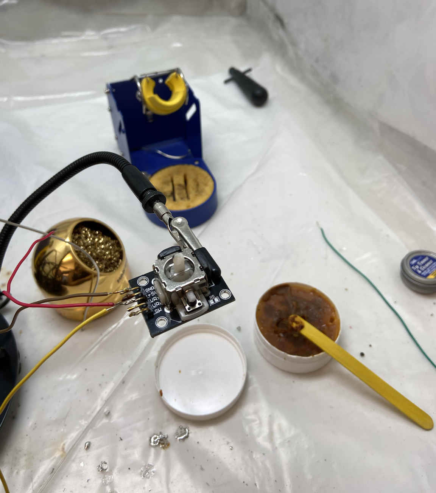

Module 1: Generative Art
Introduction
For the interactive devices module in BC3930: Creative Embedded Systems, we repurpose our ESP32-powered TTGO T1 microcontrollers from the first module, a joystick and a button which we connect using wires on a breadboard. The objective is to create an interactive device that takes in the data detected by the hardware in the form of joystick movement and button press, and then handles the data to run a program on my computer.
For my idea, I wanted to create a virtual claw machine, in which the joystick and the button would fulfil their conventional duties - the joystick controls the claw, and the button signals the claw to drop and retrieve an item. This process would involve connecting the components to each other in a circuit, 3D designing and printing an enclosure, and then assembling the components within the enclosure.
Motivation
I wanted to work on my 3D modelling skills further for this module, so I thought I could do something more than use a cardboard box and punch holes in them. Claw machines were my favorite thing as a child, and I loved how simple their mechanism was. It was a simple movement using the joystick, and then a button that accomplishes one function: to retrieve a toy if it was within reach.
I used to play virtual claw machines using mobile apps on my parents’ tablet when I was 10, so it would be nice to recreate it now. I’ve always loved the fun colorful vibe of a claw machine and I want to convey that same sense of color and vibrancy in this project. From there, I drafted a simple set of logical computations that a claw machine would perform. Since we are working with a computer screen, I simplified my logic to work on the 2D plane rather than 3D. These details will be explained further in the next section.
I also want to explore my artistic and creative side more for this project, so I devoted a significant amount of time to create design assets and the interface of my claw machine on Photoshop, which I loaded onto Processing. The following are my designs inspired by cute plush illustrations I found on Pinterest:
Implementation & Logic
The first step of the project is to read in the data from the joystick and button on Arduino IDE. I had to make sure that the pin numbers match on the breadboard with what I wrote on Arduino. Getting the orientation correct for each component was a bit tricky, so it involved a few trials and errors. More technical details will be explained in the technical document which can be found here.
The next step is to hook up the hardware with Processing IDE in order to handle the data and generate some graphics. Working with Processing was very tricky, and a lot of the problems I ran into will be detailed in the section after this. I had to do a lot of debugging, place print commands in various different places, and a lot more trials and errors.
The logic of the claw machine is ultimately a simple one. To simplify the implementation, my claw machine will be able to pick up one specific toy which is placed at a randomly generated x-value along the y-plane at around 25% the height of the canvas. Initially, I wanted to simulate a 3D plane within the 2D canvas by randomizing x and y coordinates for the positions of the “toys” within a certain range of the canvas height, but I decided this implementation is more energy and time efficient. The game will involve movement along the horizontal plane by the claw, which is controlled by the joystick. I found that our joystick gave choppy readings, so I made the decision of only implementing the horizontal movement to make the game easier to physically control.
When the button is pressed, my code will calculate the distance between the centre of the claw and the centre of the toy. The claw will then drop - If the difference in x-value is 30 pixels or below, the claw will be able to pick the toy up and retrieve it. Then, the round will finish and the player can restart a new game. Otherwise, the claw won’t be able to pick up the toy if it is too far, and the player needs to continue playing in order to clear the round.
The following is an initial sketch of the claw machine I created on Processing using a claw flat icon and a red ball as placeholders. I also used my arrow keys and space bars to implement the logic in the first stage, before replacing the inputs with my physical sensors. I did this by the advice of my professor in order to get the logic down first and make sure everything is working well.
Below is my final interface design which I created using Procreate and Adobe Photoshop.
Technical Issues
As mentioned earlier, reading in data from the ESP32 on Arduino was quite challenging. My button was oriented wrongly and could not read the digital value of the button. Using a breadboard was also new to me, so it took a white for me to grasp the concept of voltage power and ground. However, I was ultimately able to ensure that all my components were working and my setup was able to detect, read in and display data. Ultimately, I also made the decision to solder my ESP32, joystick and wires to wires in order to fit them into the enclosure I built.
However, I ran into multiple technical issues in Processing, which required me to revise a number of my initial implementations. First, accessing the values of the joystick and the button took a long time of trial and error, because Processing was not parsing substrings as expected. Eventually, I received help from a classmate, Andrea, to read in my values properly. I was also getting null values by default outside of the for-loop I made to read in the data in real-time, so I had to include the draw function within the loop itself.
Furthermore, I wanted to keep my canvas size at 600x600 because otherwise the rendering became very laggy and I was not able to generate graphics. However, the joystick took in values between the range of 0 to 5000, so this canvas size is too small to incorporate this region. Hence, I needed to offset my values. Subtracting everything by 4500 does not solve the problem of being out of the canvas bounds, because the graphics continue moving outside the frame when the joystick is moved. Hence, I decided to implement movement in the way that if the x value was above a certain number, the claw will move towards the right in steady increments of 5 pixels each time. Likewise, if the value is below a certain number, the claw will move towards the left. This helped prevent the graphics from rendering too choppily, although the values of the joystick are not reflected precisely as they were.
I also spent a significant amount of time on the collision detection part of the game. I am not very familiar with gaming libraries within Java, and given the timeframe, I thought it would be easier for me to code out my own logic. Implementing the functions “isDropping” and “isLifting” took me a while to figure out, because I want the claw to drop and lift with a seamless animated movement. Ultimately, I made the claw move with increments of 3 pixels which was smooth enough to form an animated look. Figuring out how to pick up the prize was also quite challenging, because I had to experiment with the most optimal distance to indicate a successful collision. It also took me quite a few tries to actual lift the prize off the baseline and create the animation of it being lifted up with the claw, because my code was not detecting the collision properly. The following is a snippet of my code.
Conclusion
This project was ultimately quite exhausting, and it involved a lot of trial and error, and oftentimes, a lot of uncertainty. I am happy to gain experience on sensors, to be able to get an interactive device working, and also to pick up some 3D modelling skills. I learned that a lot of the times that felt like breakthroughs introduced a new set of issues, and this teaches me how truly complex the world of creative embedded systems is. It’s not only about creating unconventional art, it’s also becoming comfortable with the very real fact that not everything will work out your way, to be able to find peace with it and work around it.
I almost gave up in the middle of this project because too many issues were popping up, but I’m glad that I did not and I was able to show people my work. Being able to create nostalgic, colorful things using code makes me feel happy and prepares me for more embedded systems projects in the future.
The technical specification can be found here.